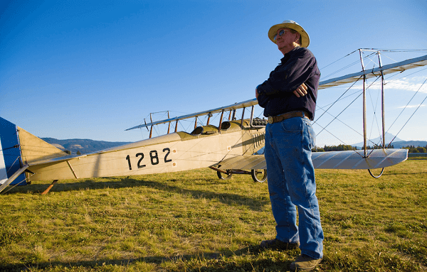

Our WAAAM-ily
So many people make WAAAM such a special place and some make it a possibility. Thank you to everyone who contributes to making WAAAM such a great place.
Our Founder
Our founder and president, Terry Brandt, started his love of flying at a very early age.
Terry's mother and father served as the FBO (fixed base operator) at the airport in Marysville, California, and also ran a flight school there for a number of years. Terry's father also built between 200 and 300 crop dusters, and was particularly fond of soaring in gliders.
Given the environment he grew up in, it didn't seem strange to anyone at the time that Terry learned to fly when he was only 12 years old. Nor did it seem strange that he bought his first airplane at the age of 19 — a 1938 J-3 Cub. Ever since then, he's been an avid collector and aviation enthusiast.
He Donated His Collection
Terry continued to collect antique aircraft and memorabilia over the last 50 years, and in 2006 he decided he would have to make one of two choices — either he would have to have a very large auction, or he would have to find a way to ensure his collection would survive by building a museum.
Fortunately for all of us, he chose the latter, and donated his collection to the museum.
Now, in just a few short years, many more aircraft have been added to the museum, and the collection of antique automobiles is now equally as impressive as the collection of antique planes.
Terry's Hopes for the Future
Terry now resides in Hood River, Oregon with his wife Lois. He remains extremely active in the business of running the museum and he still enjoys flying.
Terry hopes that others who have antique aircraft and automobiles will find that WAAAM is a safe haven to both preserve them and show them off.
Board of Directors
Thank you so much to our Board of Directors who work and volunteer tirelessly to make WAAAM great
- Terry Brandt
- Warren Bean
- John Benton
- Bill Bremmeyer
- Don Mayo
- Bryan Reid
- Jerry Wenger
- Addison Pemberton
- Ron Wade
- Judy Newman
Founding Members
Founding Members, Thank you for your generous support.
Thanks to all of the individuals, families, and businesses who have given so generously to make the Western Antique Aeroplane and Automobile Museum (WAAAM) a place for all to enjoy.
Without the following people and corporations, WAAAM would not be possible and would not be able to contribute the education, culture, and community pride of people who call the Columbia River Gorge home.
Founding Aviators
John & Julie Benton
Steve & Mary Sue Benton
The Alldredge Family
Michael & Sandra Fritz
RE Hyde Families
Charles & Katie Miller
Greg & Becky Sandercook
Founding Benefactors
William A. Cutright
Chuck Johnisee
Bryan & Tabby Reid
Steve & Becky Vaught
David & Marci Walsh
Founding Corporations
Bremmeyer Logging Company
Cloud Cap Technology
Columbia Helicopters
Don Nunamaker, Realtors
Hood River Distillers
JL Aviation
Nostalgaire Inc.
Orchard Machinery Corporation
Pheasant Valley Winery
Professional Cylinder Inspectors
Ray Schultens Motors
RM Auctions
Tallman Ladders
United Way of the Columbia Gorge
Wal-Mart Corporations
Founding Members
- Alan and Jean Anderson
- Al Ball
- Bradley Ball
- Lee and Lorraine Borchers
- Alan Brandt
- Brian and Lainey Brandt
- Frank and Claudia Chaney
- Bruce and Beverly Dallas
- Ben and Donna Davidson
- Joseph Deem
- David and Marilyn Elkins
- Aron Faegre
- Darryl and Carol Fisher
- Sheryl Forrest
- Chester and Peg Fritz
- Ron and Miki Fuller
- Larry George
- John and Julie Gillett
- Melvyn and Jane Hulzman
- Robert and Joanne Kembel
- William and Margaret Kennedy
- Jaffra Masad
- Brandon and Jo Masterson
- Carol McInnes
- Thomas and Joyce Murphy
- Judith Newman
- Betty and Russ Paddock
- Roy and Pat Pettit
- Bob and Leslie Tallman
- Joe and Pat Titus
- Matt and Cheryl Titus
- Felix and Jean Tomlinson
- Cye and Joy Vaughan
- Floyd and Laura Vaughan
- Bill and Becky Veatch
- Patrick Warren
- Bud and Gladys Weisbrod
- Jeremy and Kara Young
- Robert Zedekar
- Bill and Vicki Zurcher
Aircraft Donors
- Charles and Marge Babcock
- Bradley Ball
- Warren Bean
- Robert Blanchard
- Walter Bowe and Carlene Mendieta
- Terry R. Brandt
- Larry and Beverly Brinkley
- Scott Carter
- John and Laura Cheney
- Dama Curtright
- Columbia Helicopter
- David Clark
- Hap Clarke
- Brian Coughlin
- Don Culver
- Ben and Donna Davidson
- Brandon Dewey
- Michael Dillard
- Wayne Edsall
- Jack Fee
- Byron Garoutee
- John Gerike
- William Green
- Wayne Greenleaf
- Sam Grotte
- Robert Hammond
- Sterling and Kathleen Hanel
- Kerry Haas
- Phillis Jarrell
- Phil and Judy Jensen
- Ross Johnson
- Jack Kahle
- Dorothy Klemmedson
- Peter and Joanie Lafferty
- Francie and Jeff LaMarche
- Michele Lambert
- Wes and Nancy Lematta
- Gary A. Lintner
- Dick and Joan Johnson
- John and Evelyn Lorence
- Rick Martin
- Don Mayo
- Alan and Patricia McIntyre
- Tom and Sue McMahon
- Ted Millar
- Frederick Moore
- Judy Newman
- North Cascades Vintage Aircraft Museum
- Hilary Peck
- Addison Pemberton
- Richard Pingrey
- Eleanor Provost
- Eric Rembas
- Louis Revisky
- Aaron Rich
- Sam and Alison Richardson
- Ty Ross
- Charles Rushford
- Serendipity Soaring
- Leonard Sharpe
- Shearer Sprayers
- William Sjoberg
- Shirley Smith
- Tim Smith
- Spirit of Flight Center
- James Sterrenberg
- Mike and Linda Strong
- Larry Tobin
- Neil and Velma VanAelst
- Kim Vermilya
- Andy and Lucia von Flowtow
- Tuck Wilson and Family
- Dale Weir
- Ted Weisgram
- Jerry and Sonja Wenger
- Christopher and Woodson Woods
Automobile Donors
- Frank Alberti
- Alpenrose Dairy
- Andy and Jean Anderson
- Janet Andrews
- Mike Biegalke
- Chuck & Marge Babcock
- Howard Bacon
- Kenneth Bates
- Warren Bean
- Susan & Alan Bell
- Julie & John Benton
- Mary Sue Benton
- Charles Bernard
- Gary & Petra Biddle
- Gordon Boorse
- Burr Boutwell
- John Bowles
- Lois Bowman
- Brian Brandt
- Terry R. Brandt
- Mike & Pam Burback
- Melissa Burgess
- Sheryl Carey
- Scott Clark
- Bill and Mina Clough
- D & L Foundary
- Marjorie Daley
- Bruce & Bev Dallas
- Doris Dehart
- Skip & Hedy Dunn
- Joan Durgin
- Dave Elkins
- Albert Elton
- Thomas Engel
- Louisa Evans
- James & Caroline Ferris
- John & Janice Fiedler
- The Walt & June Ford Family
- Mike & Sandra Fritz
- Bonnie Gallagher
- Mike Gaulke
- Allan Grant
- Bob & Fran Greenlee
- Mike Grey
- William Hagadorn
- Donna Harlan
- Sandra Harris
- Arthur & Patrica Henderson
- Eric Heublein
- Larry Howard
- Camille Hukari
- Larry Hull
- Gary & Sally Jenkins
- Phil & Judy Jensen
- Duncan Johnson
- Bob & Allyson Kavner
- Gary & Linda Kessimakis
- Art & Betsy Knowles
- Paul & Judy Kuter
- James Landgraf
- Bill Leeper
- Wes & Nancy Lematta
- John & Evelyn Lorence
- Cliff Mansfield
- Michael Maurer
- Don Mayo
- Craig McMillan
- Craig Mendenhall
- Kate Mills
- Ron and Linda Moon
- Cathie Moravec
- North Cascades Vintage Aircraft Museum
- Orchard Land Company
- Steven & Helen Pomerleau
- Jim & Mary Ann Powell
- Dale Price
- Don Richards
- Jim Rohlfing
- Mike & Stormy Sager
- Ann Schwebke
- Joseph Sowers, Jr.
- Kathy Spainhower
- Ray & Deborah Splinter
- John Stanley
- Rees Stevenson
- Wayne & Kathy Stone
- Mike & Linda Strong
- Michael Sullivan
- Ron Wade
- Don & Joni Walker
- Patrick Warren
- Ralph Weaver & Paula Sandirk
- Audry Weed
- Bruce & Barbara Weir
- Robert Weisman
- Michael Willastone
- Phil & Bev Williams
- Miles Wilson
- Ernest & Tillie Wolf
- Jack & Joyce Woolf
- World of Speed
- Gene & Bonnie Wright
- Beth Zetter
- People like you via admission fees, memberships and participating in WAAAM classes!